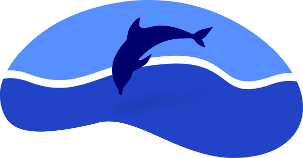

測驗結果
你的生理時鐘是海豚型

海豚型特色
- ● 占所有人口10%。
- ● 睡得淺，會被一點點聲音吵醒
- ● 白天感覺疲憊想睡，直到晚上才有清醒感
- ● 神經質、注重隱私，一旦打破親密關係的牆，顯露自己所有怪癖之後，就會培養出極為親近、忠誠的關係
24h典型作息
- 起床情形：
- 6:30~7:00 醒來時覺得很累，我發誓，如果可以撐過白天的話，晚上要早點上床睡覺
- 上班情形：
- 9:30~12:00 人彷彿在霧裡。沒辦法讓自己覺得更有精神一些，也沒辦法專心。
- 12:00~13:00 要是注意力被別的事情拉走，可能就會忘了吃午餐。
- 13:00~16:00 下午一兩點很痛苦，真想閉上眼睛睡個午覺。如果有時間，我就會把頭靠在桌上，閉上眼睛。
- 16:00~18:00 我都不知道自己不能專心是因為身體太累，還是因為我喝太多咖啡了。
- 下班情形：
- 18:00~19:00 因為忘了吃午餐，所以覺得餓了，只想快點吃點東西。我很樂意每天晚上都抓片披薩當晚餐。
- 18:30~20:00 晚餐後是開工時間，我好像完全清醒了、充滿活力。我會出門辦事開始料理家務，或是用用電腦。
- 20:00~20:30 我做了很多事，或努力想做很多事。也許會開始動手做點什麼，然後又被另一件事轉移注意力，尤其是上網時，總是有家事或什麼事要忙。
- 睡眠情形：
- 20:30~22:30 由於昨晚沒有睡好，我早早上床想補眠。但是沒有用，一躺下來，腦子就亂成一團。我開始想自己該做、想做的事。也許會用手機滑臉書，或是看完一部電影，好讓自己暫時忘記失眠這件事。
- 22:30~23:30 還躺在床上醒著。開始覺得沮喪，進入惡性循環：因為睡不著而焦慮，於是更難睡著。又或者我想到一件重要的事，然後把我先生叫醒來談，結果談得並不順利。
- 00:30~2:30 翻來覆去。我的焦慮逐漸升高。我看著鬧鐘，開始計算如果能在十分鐘或二十分鐘內睡著，還剩幾個小時可以睡。整個身體都覺得緊繃。
- 2:30~4:30 如果睡著，感覺也睡得很淺。一直醒來，也不知道有沒有真的入睡。
完美工作一天
- 最警醒的時候：深夜
- 最有生產力的時候：下午4點後
- 6:30 起床，不按貪睡提醒
- 9:30~9:45 喝咖啡
- 10:00~12:00 創意發想時間，寫下日記記靈感、寫下大方向待辦事項
- 13:00~16:00 不睡午覺、不喝咖啡，累了就散散步
- 16:00~18:00 處理困難的事務
- 22：30 關閉所有螢幕，讀書，聊天，泡熱水澡
- 23:30 睡覺
目標
- 1.增加早上的活動力，才能更加善用早晨的時光。
- 2.減少晚上的焦慮感，夜晚才更能休息。